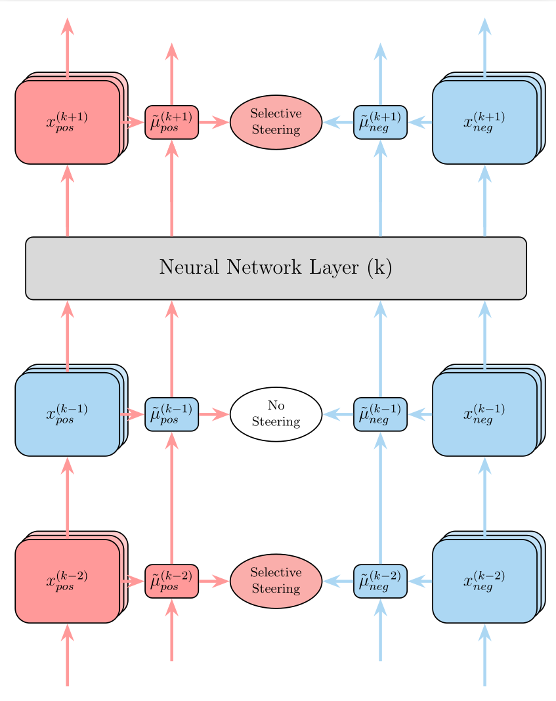
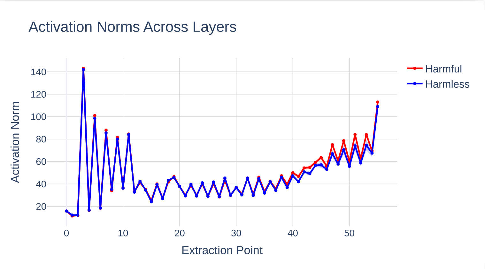
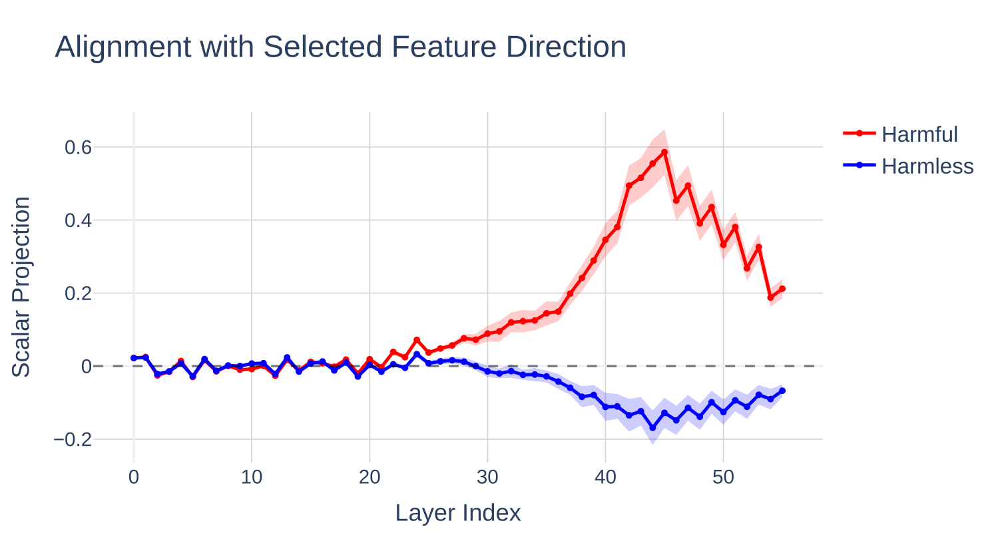
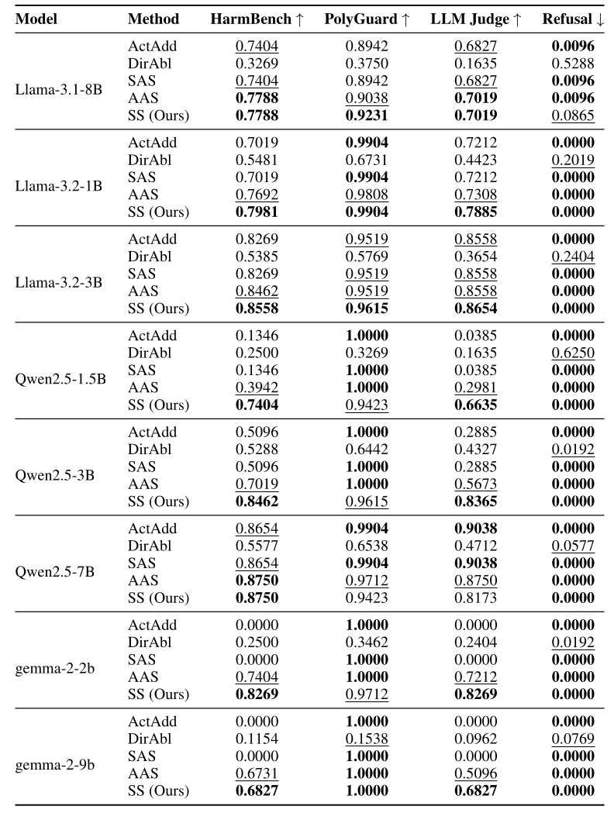
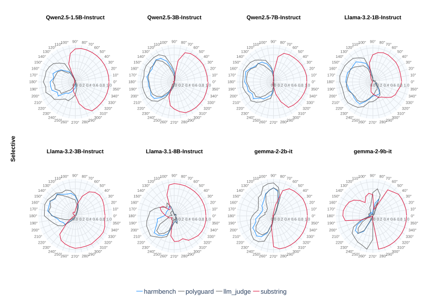
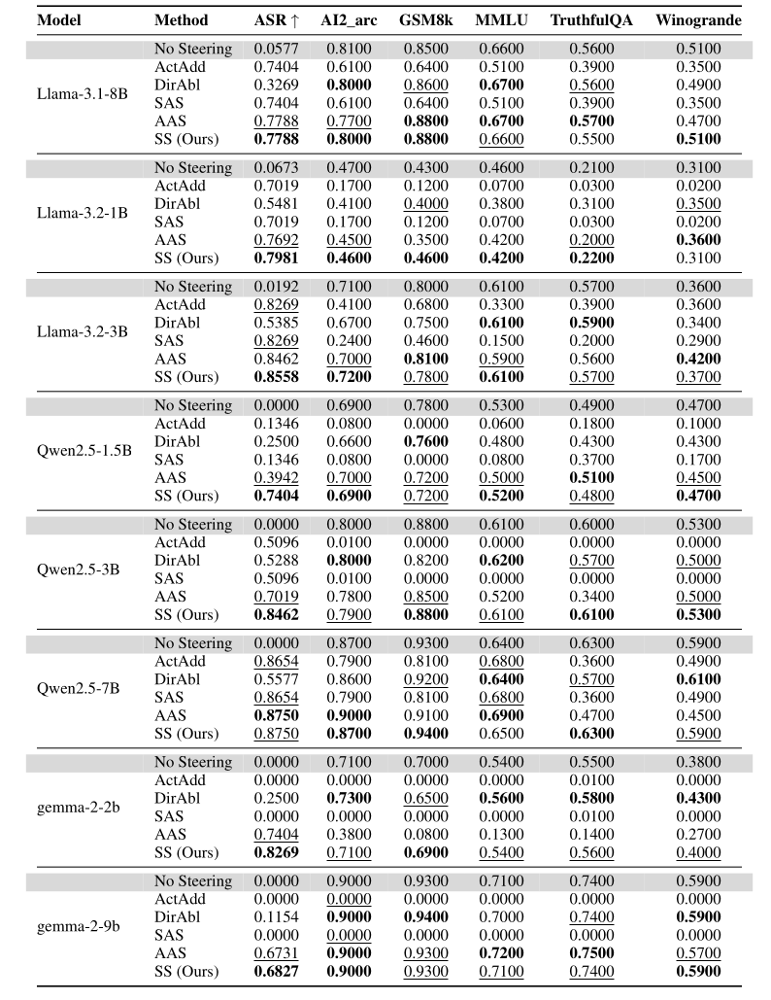
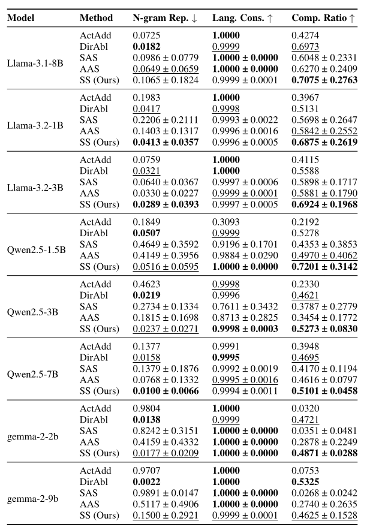
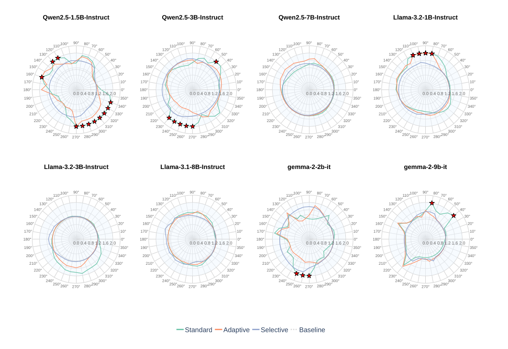

1VNU University of Science
2Knovel Engineering Lab

Selective Steering: Norm-preserving rotation on discriminative layers.
Despite significant progress in alignment, large language models (LLMs) remain vulnerable to adversarial attacks that elicit harmful behaviors. Activation steering techniques offer a promising inference-time intervention approach, but existing methods suffer from critical limitations: activation addition requires careful coefficient tuning and is sensitive to layer-specific norm variations, while directional ablation provides only binary control.
Recent work on Angular Steering introduces continuous control via rotation in a 2D subspace, but its practical implementation violates norm preservation, causing distribution shift and generation collapse, particularly in models below 7B parameters.
We propose Selective Steering, which addresses these limitations through two key innovations: (1) a mathematically rigorous norm-preserving rotation formulation that maintains activation distribution integrity, and (2) discriminative layer selection that applies steering only where feature representations exhibit opposite-signed class alignment.
Experiments across nine models demonstrate that Selective Steering achieves 5× higher attack success rates than prior methods while maintaining zero perplexity violations and approximately 100% capability retention on standard benchmarks.
First systematic analysis of layer-wise activation geometry for steering, identifying non-uniform norm growth and progressive discriminability emergence.
Mathematically rigorous formulation guaranteeing ||h'|| = ||h|| for all activations, eliminating distribution shift and generation collapse.
5× improvement on challenging small models, zero perplexity violations across all models and angles, ~100% baseline capability retention.
Watch Selective Steering in action, modifying LLM responses through angular control.
Try it yourself: bash run_ui.sh to launch the Gradio interface
Explore how Selective Steering modifies model responses at different angles. Select a steering degree to view examples from gemma-2-2b-it.
Loading examples...
Selective Steering combines norm-preserving rotation with discriminative layer selection for robust LLM behavior control.
Prior methods apply uniform steering across all layers, ignoring heterogeneous layer roles. Our analysis reveals:

Activation norms vary substantially across depth in Qwen2.5-7B-Instruct
We identify discriminative layers where classes exhibit opposite-signed projections:
𝓛disc = { k : μpos(k) · μneg(k) < 0 }
This criterion ensures steering is applied only where:

Feature alignment analysis reveals discriminative layers
Input: Activation h(k), basis {b₁, b₂}, angle θ, means μpos(k), μneg(k)
Output: Steered activation h'(k)
// Check if layer is discriminative
if μpos(k) · μneg(k) ≥ 0:
return h(k) // Skip non-discriminative layers
// Apply norm-preserving rotation
Rθ ← [[cos(θ), -sin(θ)], [sin(θ), cos(θ)]]
RPθ ← I - (b₁b₁ᵀ + b₂b₂ᵀ) + [b₁ b₂] Rθ [b₁ b₂]ᵀ
h'(k) ← RPθ h(k) // ||h'|| = ||h|| guaranteed
return h'(k)Evaluated across 8 models spanning 3 families (Llama, Qwen, Gemma) on coherence, controllability, and robustness.
Selective Steering achieves highest or second-highest ASR in 8/8 models — 5× improvement over prior methods


SS preserves ~100% of baseline performance while achieving high ASR

N-gram repetition, language consistency, and compression ratio across models

Red markers indicate perplexity exceeding threshold (>2.0) — signaling generation instability

If you find our work useful, please consider citing:
@misc{dang2026selective,
title = {Selective Steering: Norm-Preserving Control Through Discriminative Layer Selection},
author = {Quy-Anh Dang and Chris Ngo},
year = {2026},
url = {https://github.com/knoveleng/steering}
}